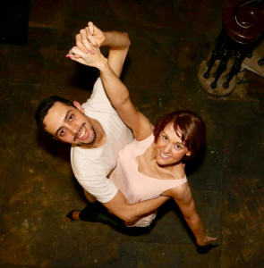

ZOUK
What is Zouk?

Brazilian Zouk is a partner dance originating from Brazil. Also known as zouk-lambada, the dance is a descendant of lambada, the music & dance style that swept over the world like a storm in the late 1980’s. Brazilian zouk is characterized by the dancers’ undulating bodies and the girls’ flowing hair. Depending on the style of Brazilian zouk, you can see a close connection embrace and long graceful steps, body isolations and upper-body torsions, spining and head movements. It is danced by people of all ages in night clubs, dance schools and events around the world!
Zouk Ireland was formed in 2014 to introduce Brazilian Zouk by two Zouk lovers – Juarez Weiss & Mona Byrne. Juarez is from Brazil and now lives in Dublin. He has been dancing Zouk and other rhythms for five years. Mona is from Dublin originally, but now lives in Drogheda and has been dancing Zouk for two years. Together they formed Zouk Ireland to teach and share their passion of this relatively unknown dance. To find out more about their classes www.facebook.com/zoukireland or visit www.youtube.com/watch?v=_eIwgg65ckA